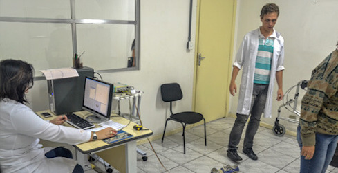
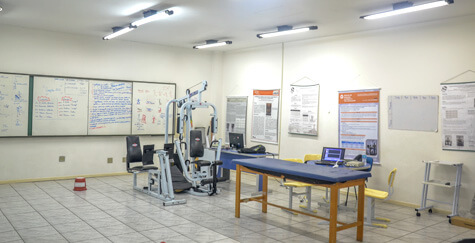
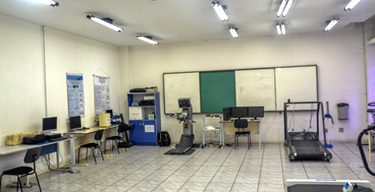
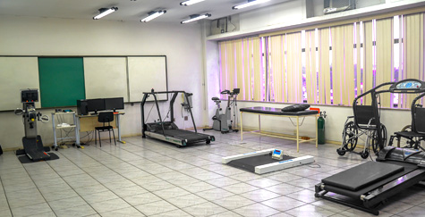
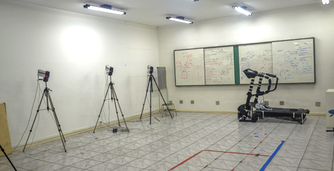
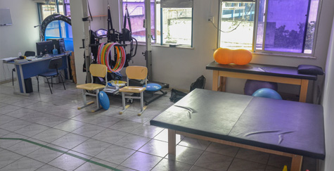
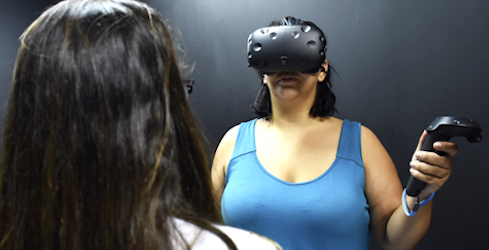
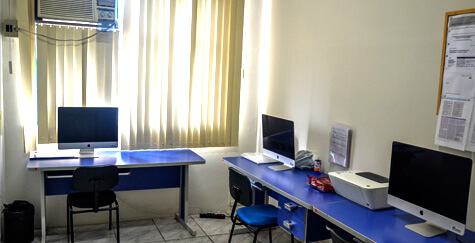

Programa
Apresentação
Descrição
O PROGRAMA DE PÓS-GRADUAÇÃO EM CIÊNCIAS DA REABILITAÇÃO DA UNISUAM (PPGCR-UNISUAM) tem por objetivo formar profissionais, em nível de Mestrado e Doutorado, para atuação em pesquisa científica e no ensino superior na área de Ciências da Reabilitação, bem como estimular a autonomia de pesquisadores por meio de Estágio Pós-Doutoral.
O PPGCR-UNISUAM tem sua sede na Rua Dona Isabel 94, Bonsucesso, RJ, CEP 21032-060. O PPGCR-UNISUAM insere-se na Grande Área de Conhecimento de Ciências da Saúde (40000001), na Área Básica de Educação Física (40900002), Subárea de Fisioterapia e Terapia Ocupacional (40800008). O PPGCR-UNISUAM oferece as titulações de Mestre em Ciências da Reabilitação e Doutor em Ciências da Reabilitação, além do Estágio Pós-Doutoral em Ciências da Reabilitação.
Dados cadastrais
| Código: | 31063012002P4 |
| Nome: | Ciências da Reabilitação |
| Nome inglês: | Rehabilitation Sciences |
| Coordenador(a): | ARTHUR DE SA FERREIRA |
| Área Básica: | FISIOTERAPIA E TERAPIA OCUPACIONAL |
| Área de Avaliação: | EDUCAÇÃO FÍSICA |
| Data de recomendação: | 28/09/2009 |
| Modalidade: | ACADÊMICO |
| Regime Letivo: | SEMESTRAL |
| CEP: | 21032-060 |
| Logradouro: | Rua Dona Isabel |
| Número: | 94 |
| Complemento: | Escola de Saúde |
| Bairro: | Bonsucesso |
| Município: | Rio de Janeiro - RJ |
| URL: | https://www.unisuam.edu.br/mestrado/mestrado-academico-em-ciencias-da-reabilitacao |
| – | https://www.unisuam.edu.br/doutorado-academico-em-ciencias-da-reabilitacao |
| – | https://www.unisuam.edu.br/pos-doutorado-academico-em-ciencias-da-reabilitacao |
| Fax: | – |
| E-mail institucional do programa: | SECRETARIACR@UNISUAM.EDU.BR |
2016-2013
| Publicação | Documento | Abrir |
|---|---|---|
| 2017 | Ficha de Avaliação do Programa.pdf | ↗️ |
| 2017 | Relatório de Área da Avaliação Quadrienal 2013-2016.pdf | ↗️ |
| 2016 | Portaria N. 919 DOU 18/08/2016, Seção 1, Página 13.pdf | ↗️ |
Breve histórico
2020-2017
No atual quadriênio, 2017-2020, o PPGCR-UNISUAM amplia seu compromisso com formação de recursos humanos qualificada, de produção intelectual internacional e captação de financiamentos para pesquisa. Em síntese do período 2017-2020, o corpo docente passa por um processo de renovação e completa 2020 com 12 docentes permanentes credenciados, além de 4 pesquisadores que passaram pelo Estágio Pós-doutoral (1 com bolsa PNPD-CAPES e 2 pesquisadores estrangeiros). Um total de 87 Mestres e 8 Doutores foram titulados com tempo médio de titulação de 28 e 49 meses, respectivamente. A produção de artigos alcançou 160 artigos em periódicos nacionais e internacionais indexados no PubMed. Adicionalmente, 25 projetos foram contemplados em editais da FAPERJ, CAPES e CNPq – merecendo destaque 3 editais de “Jovem Cientista do Nosso Estado”, 2 editais de “Universidades Sediadas no RJ” e 1 bolsa de Pesquisador do CNPq – somando aproximadamente R$2.000.000,00 em recursos captados no quadriênio (cerca de R$4.170.000,00 desde a formação do Grupo de Pesquisa). Em continuidade à política de fixação de docentes para o PPGCR-UNISUAM, o bolsista no quadriênio foi contratado para compor o quadro de docentes permanentes do Programa. Estes resultados no quadriênio vigente e contextualizados com os demais indicadores reiteram o compromisso do grupo de pesquisadores em desenvolver a Ciência no Estado e no País.
2016-2013
No quadriênio de 2013-2016, o PPGCR-UNISUAM manteve seu compromisso com a qualidade na formação de recursos humanos, produção intelectual e captação de financiamentos. Em síntese desse quadriênio, o corpo docente foi estabilizado em 13 docentes permanentes (mais 1 colaborador), 66 mestres foram titulados em tempo médio de 26 meses e 121 artigos foram indexados no PubMed. Adicionalmente, 33 projetos foram contemplados em editais da FAPERJ e CNPq – merecendo destaque 13 editais de Auxílio à Pesquisa, 2 editais temáticos de “Apoio ao Desenvolvimento de Inovações no Esporte”, 2 editais de “Jovem Cientista do Nosso Estado” e 1 bolsa de Pós-Doutorado no Exterior – somando aproximadamente R$1.800.000,00 em recursos e bolsas PROSUP captados no período (cerca de R$2.100.000,00 no total). Estes resultados, contextualizados com os demais indicadores do PPGCR-UNISUAM para a Área 21 nesse período, resultaram na manutenção no conceito 4, mostrando a consistência do desenvolvimento do PPGCR-UNISUAM em uma Área ainda em expansão .
2011-2010
No triênio de 2010-2012, o PPGCR-UNISUAM obteve um crescimento quantitativo e qualitativo, tanto na formação de recursos humanos (docentes em nível superior) quanto no desenvolvimento científico e produção intelectual, assim como na captação de recursos para financiamento de PP. Em síntese desse triênio, o corpo docente foi expandido para 14 docentes permanentes (mais 2 colaboradores), 18 mestres foram titulados em tempo médio de 23 meses e 19 artigos foram indexados no PubMed. Adicionalmente, 10 projetos foram contemplados em editais da FAPERJ e CAPES – 4 editais de Auxílio à Pesquisa, 3 editais de Apoio ao Pesquisador Recém-Contratado, 2 editais de Apoios a Eventos e 1 edital de “Jovem Cientista do Nosso Estado” – somando aproximadamente R$120.000,00 em captação de recursos no período (R$315.000,00 no total). Estes resultados, contextualizados com os demais indicadores do PPGCR-UNISUAM para a Área 21, culminaram no conceito 4 já em sua primeira avaliação trienal, conforme Portaria n° 656, publicada no D.O.U. de 23/5/2017, Seção 1, Págs. 14.
O comprometimento institucional no fortalecimento das políticas de pesquisa é novamente reforçado no PDI 2012-2016, no qual são definidas ações de estímulo à pesquisa por meio de capacitação e fixação de docentes titulados na IES. Em 2013, ainda somente com o curso de Mestrado autorizado, o PPGCR-UNISUAM foi contemplado com 1 bolsa de Estágio Pós-Doutoral, acompanhando a implantação do Programa Nacional de Pós-Doutorado (PNPD) da CAPES, de acordo com a Portaria Nº 086 de 3/7/2013. A política da IES foi então dedicada à utilização da bolsa para captação e fixação de docentes para o PPGCR-UNISUAM. Devido ao excelente desempenho dos pesquisadores durante o Estágio Pós-Doutoral, todos os 2 pesquisadores bolsistas no período 2013-2016 foram contratados para compor o quadro de docentes permanentes do Programa. O amadurecimento da experiência do corpo docente na orientação dos mestrandos e a continuada elevação da produção acadêmica do grupo viabilizaram o envio da Proposta de Curso Novo de Doutorado Acadêmico em Ciências da Reabilitação. A proposta de curso, submetida em 2014, foi também aprovada após primeira avaliação. O curso de Doutorado Acadêmico do PPGCR-UNISUAM foi então instalado em 2015, logo após a recomendação CAPES, conforme Portaria n° 919, publicada no D.O.U. de 18/8/2016, Seção 1, Pág. 13.
Pré-2010
A valorização da pesquisa científica no meio acadêmico e a busca constante pela excelência na formação docente são ambas características da UNISUAM, evidenciadas a partir do Plano de Desenvolvimento Institucional (PDI) 2003-2007 quando, com recursos próprios, criou o Programa Institucional de Bolsas de Iniciação Científica (PIBIC). A partir deste PDI, a UNISUAM passa a atribuir carga horária remunerada para que seus docentes exerçam atividades de pesquisa científica. A partir do PDI 2003-2007, a UNISUAM iniciou a contratação de docentes titulados (doutores) com o objetivo de instituir a Pós-Graduação Stricto Sensu na área de Ciências da Reabilitação. A atuação conjunta do grupo de pesquisa da UNISUAM iniciou-se com o estudo dos documentos da Área 21, seguida da definição criteriosa tanto da AC quanto das respectivas LP, de modo a nortear os PP e a respectiva produção intelectual. Este processo culminou na certificação do Grupo de Pesquisa em Fisioterapia da UNISUAM no DGP-CNPq em 2005 , substituído a partir de 2017 por novos grupos.
No período de 2005 a 2009, em consonância com o PDI 2008-2012, o grupo de pesquisa foi progressivamente ampliado e fortalecido; participavam do grupo 10 docentes, capazes de captar recursos para seus projetos via editais e de publicar seus resultados em periódicos científicos. Ao todo, foram contemplados 4 projetos em editais de agências regionais de fomento à pesquisa (Fundação de Amparo à Pesquisa do Estado do Rio de Janeiro – FAPERJ), sendo 3 editais de Auxílio à Pesquisa e 1 edital temático em “Apoio à Construção da Cidadania da Pessoa com Deficiência”, somando aproximadamente R$170.000,00. A produção científica da UNISUAM foi impulsionada, mostrando em 2009 ainda como Grupo de Pesquisa, já com 3 artigos publicados indexados somente no PubMed. A participação dos alunos da graduação com bolsas do PIBIC foi decisiva para o desenvolvimento das pesquisas nessa etapa. Visando promover e aprimorar os aspectos éticos da pesquisa, os docentes do Grupo de Pesquisa em Fisioterapia organizaram o Comitê de Ética em Pesquisa (CEP) da IES, que foi aprovado pelo Comissão Nacional de Ética em Pesquisa (CONEP) pela Carta nº. 341 CONEP/CNS/MS de 10/04/2006. Desde sua criação, os docentes do Grupo de Pesquisa fazem parte deste comitê nas funções de coordenação, coordenação adjunta e/ou de membros efetivos.
A sequência desses fatos, somada ao total apoio institucional e ao desenvolvimento técnico-científico do grupo, resultou na elaboração da Proposta de Curso Novo de Mestrado Acadêmico em Ciências da Reabilitação. A proposta de curso, submetida em meados de 2009, foi aprovada após primeira avaliação. O Curso de Mestrado Acadêmico do Programa de Pós-Graduação em Ciências da Reabilitação da UNISUAM (PPGCR-UNISUAM) foi então instalado em 2010, logo após a recomendação da Coordenação de Aperfeiçoamento de Pessoal de Nível Superior (CAPES), com conceito 3, conforme Portaria n° 1045, publicada no D.O.U. de 19/8/2010, Seção 1, Pág. 10. O pioneirismo da UNISUAM na Pós-Graduação em Ciências da Reabilitação revitaliza então o mesmo ideal de 1979 com a absorção do curso de graduação em Fisioterapia no RJ.
Área de concentração
Descrição
O PPGCR-UNISUAM organiza sua ÁREA DE CONCENTRAÇÃO (AC), LINHAS DE PESQUISA (LP) e PROJETOS DE PESQUISA (PP) de acordo com o princípio geral de que a reabilitação está centrada no binômio avaliação-intervenção, em todas as fases do processo saúde-doença, em diversas populações sob o modelo biopsicossocial. Atendem-se assim às demandas por investigação em níveis de atenção primária (prevenção e promoção da saúde), secundária (diagnóstico precoce e intervenção imediata) e terciária (reabilitação) nas diversas especialidades da Fisioterapia em particular área e da saúde em geral.
Atual
| Área de Concentração | Descrição | Início |
|---|---|---|
| ASPECTOS FUNCIONAIS EM REABILITAÇÃO | Analisar os processos envolvidos nas respostas funcionais, os métodos e técnicas de avaliação, bem como a investigação da eficácia de intervenções relacionadas à prevenção e reabilitação física dos sistemas orgânicos no âmbito individual e coletivo. | 01/01/2010 |
Linhas de pesquisa
Descrição
A partir desta AC são derivadas as 3 LP vigentes: ABORDAGEM TERAPÊUTICA EM REABILITAÇÃO, AVALIAÇÃO FUNCIONAL EM REABILITAÇÃO e REABILITAÇÃO NO ESPORTE E NO ESPORTE ADAPTADO. Mediante a expansão do corpo docente e Laboratorios, com consequente aumento da diversidade dos PP, uma LP (AVALIAÇÃO FUNCIONAL E ATIVIDADE FÍSICA) foi encerrada e outra (AVALIAÇÃO E INTERVENÇÃO NO ESPORTE ADAPTADO) foi renomeada e redefinida em sua descrição. A atual organização das LP reforça a interdisciplinaridade e transdisciplinaridade dos PP do PPGCR-UNISUAM, caracterizado por aliar áreas específicas do conhecimento de seus docentes e discentes para responder às questões que uma única área ou especialidade não responderia adequadamente. As LP e suas respectivas descrições são revisadas continuamente, sendo a última atualização em 2017, a partir das sugestões do parecer da Comissão de Avaliação Quadrienal 2017.
Atual
| Linhas de Pesquisa | Descrição | Início |
|---|---|---|
| ABORDAGEM TERAPÊUTICA EM REABILITAÇÃO | Estudo de ações de atenção primária, secundária e terciária, considerando as diferentes características populacionais e sua inserção nas políticas públicas de saúde. Estudo do efeito das intervenções terapêuticas na capacidade funcional e na qualidade de vida nas fases do desenvolvimento, visando a reabilitação de desordens nas diversas populações. | 01/01/2010 |
| AVALIAÇÃO FUNCIONAL EM REABILITAÇÃO | Estudo dos aspectos funcionais do processo saúde-doença nas diversas populações, considerando as dimensões biopsicossociais (morfológica, biomecânica, fisiológica, fisiopatológica, cognitiva, emocional e participação). Estudo, desenvolvimento e validação de procedimentos e tecnologias para avaliação funcional em reabilitação. | 01/01/2014 |
| REABILITAÇÃO NO ESPORTE E NO ESPORTE ADAPTADO | Estudo dos aspectos fisiológicos, biomecânicos, funcionais e sociais relacionados à prática de esportes, incluindo os adaptados, e a otimização do desempenho, abrangendo praticantes recreacionais e profissionais em todas as faixas etárias. Estudo dos fatores de risco e proteção de lesões advindas da prática esportiva e dos efeitos de intervenções para sua prevenção, recuperação e reabilitação em diversas populações. | 01/01/2014 |
Inativas
| Linhas de Pesquisa | Descrição | Início | Fim |
|---|---|---|---|
| AVALIAÇÃO FUNCIONAL E ATIVIDADE FÍSICA | Esta linha de pesquisa abrange o estudo dos aspectos funcionais, metodológicos e epidemiológicos envolvidos no processo saúde-doença e no desempenho esportivo, influenciados pelas condições fisiológicas, fisiopatológicas, cognitivas, biomecânicas, biofísicas, bioquímicas e morfológicas. Tem como objetivo o planejamento de ações estratégicas de promoção, prevenção e reabilitação, considerando as diferentes características populacionais e sua inserção nas políticas públicas de saúde. | 01/01/2010 | 01/09/2015 |
Projetos de pesquisa
Descrição
Os docentes vinculados ao PPGCR são orientados a coordenar até 2 PP institucionais (“guarda-chuva”) por LP, sendo cada PP vinculado a uma LP diferente. Adicionalmente, os docentes são estimulados a colaborar nos projetos das diferentes LP, de modo que a transdisciplinaridade gere aspectos inovadores para as Ciências da Reabilitação. Desse modo, PP anteriores a 2017 têm sido concluídos e substituídos por novos projetos institucionais, promovendo assim uma melhor distribuição dos PP e respectivas produções entre as LP. Considerando-se a interação de fatores tais como as áreas de formação e atuação dos docentes, a temática dos PP, e sua aderência aos grupos de pesquisa, evidencia-se certa assimetria na distribuição dos PP entre as LP ativas.
Em andamento

Tabela 2
| ABORDAGEM TERAPÊUTICA EM REABILITAÇÃO | AVALIAÇÃO FUNCIONAL EM REABILITAÇÃO | REABILITAÇÃO NO ESPORTE E NO ESPORTE ADAPTADO | N | |
|---|---|---|---|---|
| AGNALDO JOSE LOPES | 1 | 2 | 0 | 3 |
| ALEX SOUTO MAIOR ALVES | 1 | 0 | 1 | 2 |
| ARTHUR DE SA FERREIRA | 0 | 1 | 0 | 1 |
| FABIO VIEIRA DOS ANJOS | 1 | 0 | 0 | 1 |
| IGOR RAMATHUR TELLES DE JESUS | 1 | 1 | 1 | 3 |
| LEANDRO ALBERTO CALAZANS NOGUEIRA | 1 | 1 | 0 | 2 |
| LUIS FELIPE DA FONSECA REIS | 2 | 1 | 0 | 3 |
| NEY ARMANDO DE MELLO MEZIAT FILHO | 1 | 1 | 0 | 2 |
| PATRICIA DOS SANTOS VIGARIO | 0 | 1 | 1 | 2 |
| RENATO SANTOS DE ALMEIDA | 1 | 0 | 0 | 1 |
| THIAGO LEMOS DE CARVALHO | 1 | 1 | 0 | 2 |
| N | 10 | 9 | 3 | 22 |
| ABORDAGEM TERAPÊUTICA EM REABILITAÇÃO | AVALIAÇÃO FUNCIONAL EM REABILITAÇÃO | N | |
|---|---|---|---|
| LUCIANA CREPALDI LUNKES | 1 | 0 | 1 |
| PRAVEEN KUMAR KANDAKURTI | 0 | 1 | 1 |
| SAMPATH KUMAR AMARAVADI | 1 | 0 | 1 |
| N | 2 | 1 | 3 |
2020-2017
Tabela 3
| ABORDAGEM TERAPÊUTICA EM REABILITAÇÃO | ABORDAGEM TERAPÊUTICA EM REABILITAÇÃO | REABILITAÇÃO NO ESPORTE E NO ESPORTE ADAPTADO | AVALIAÇÃO FUNCIONAL EM REABILITAÇÃO | AVALIAÇÃO FUNCIONAL EM REABILITAÇÃO | REABILITAÇÃO NO ESPORTE E NO ESPORTE ADAPTADO | REABILITAÇÃO NO ESPORTE E NO ESPORTE ADAPTADO | N | |
|---|---|---|---|---|---|---|
| AGNALDO JOSE LOPES | 2 | 0 | 6 | 0 | 0 | 8 |
| ALEX SOUTO MAIOR ALVES | 0 | 0 | 0 | 1 | 0 | 1 |
| BRUNO FERREIRA VIANA | 0 | 0 | 1 | 0 | 1 | 2 |
| ERIKA DE CARVALHO RODRIGUES | 2 | 0 | 4 | 0 | 0 | 6 |
| FELIPE AMORIM DA CUNHA | 4 | 1 | 0 | 0 | 1 | 6 |
| FERNANDO SILVA GUIMARAES | 1 | 0 | 1 | 0 | 0 | 2 |
| JULIO GUILHERME SILVA | 2 | 0 | 0 | 0 | 0 | 2 |
| LAURA ALICE SANTOS DE OLIVEIRA | 11 | 0 | 2 | 0 | 0 | 13 |
| LEANDRO ALBERTO CALAZANS NOGUEIRA | 4 | 0 | 0 | 0 | 0 | 4 |
| MARCO ANTONIO ORSINI NEVES | 1 | 0 | 0 | 0 | 0 | 1 |
| NEY ARMANDO DE MELLO MEZIAT FILHO | 1 | 0 | 4 | 0 | 0 | 5 |
| SARA LUCIA SILVEIRA DE MENEZES | 0 | 0 | 2 | 0 | 0 | 2 |
| THIAGO LEMOS DE CARVALHO | 0 | 0 | 1 | 0 | 0 | 1 |
| N | 28 | 1 | 21 | 1 | 2 | 53 |
| ABORDAGEM TERAPÊUTICA EM REABILITAÇÃO | AVALIAÇÃO FUNCIONAL EM REABILITAÇÃO | PROJETO ISOLADO | N | |
|---|---|---|---|---|
| JAYA SHANKER TEDLA | 1 | 0 | 0 | 1 |
| RAVI SHANKAR REDDY | 0 | 1 | 0 | 1 |
| RENATO SANTOS DE ALMEIDA | 0 | 0 | 1 | 1 |
| N | 1 | 1 | 1 | 3 |
2016-2013
Tabela 4
| ABORDAGEM TERAPÊUTICA EM REABILITAÇÃO | AVALIAÇÃO FUNCIONAL E ATIVIDADE FÍSICA | AVALIAÇÃO FUNCIONAL E ATIVIDADE FÍSICA | AVALIAÇÃO FUNCIONAL EM REABILITAÇÃO | AVALIAÇÃO FUNCIONAL E ATIVIDADE FÍSICA | REABILITAÇÃO NO ESPORTE E NO ESPORTE ADAPTADO | AVALIAÇÃO FUNCIONAL EM REABILITAÇÃO | REABILITAÇÃO NO ESPORTE E NO ESPORTE ADAPTADO | N | |
|---|---|---|---|---|---|---|---|
| AGNALDO JOSE LOPES | 0 | 0 | 0 | 0 | 1 | 0 | 1 |
| ALEX SOUTO MAIOR ALVES | 0 | 0 | 2 | 0 | 0 | 0 | 2 |
| ANKE BERGMANN | 3 | 0 | 0 | 0 | 0 | 0 | 3 |
| ARTHUR DE SA FERREIRA | 3 | 3 | 1 | 0 | 1 | 0 | 8 |
| ERIKA DE CARVALHO RODRIGUES | 1 | 0 | 0 | 0 | 0 | 0 | 1 |
| FERNANDO SILVA GUIMARAES | 1 | 2 | 1 | 0 | 0 | 1 | 5 |
| JULIO GUILHERME SILVA | 0 | 1 | 0 | 0 | 0 | 0 | 1 |
| LAURA ALICE SANTOS DE OLIVEIRA | 1 | 1 | 0 | 0 | 0 | 0 | 2 |
| LEANDRO ALBERTO CALAZANS NOGUEIRA | 6 | 0 | 1 | 0 | 0 | 0 | 7 |
| LILIAN RAMIRO FELICIO | 1 | 0 | 0 | 0 | 0 | 0 | 1 |
| MARCO ANTONIO ORSINI NEVES | 2 | 0 | 0 | 0 | 5 | 0 | 7 |
| MIRIAM RAQUEL MEIRA MAINENTI | 2 | 0 | 0 | 0 | 0 | 0 | 2 |
| NEY ARMANDO DE MELLO MEZIAT FILHO | 2 | 0 | 0 | 0 | 0 | 0 | 2 |
| PATRICIA DOS SANTOS VIGARIO | 1 | 1 | 0 | 1 | 0 | 1 | 4 |
| SARA LUCIA SILVEIRA DE MENEZES | 4 | 0 | 0 | 0 | 2 | 0 | 6 |
| SUSANA ORTIZ COSTA | 2 | 0 | 0 | 0 | 0 | 0 | 2 |
| N | 29 | 8 | 5 | 1 | 9 | 2 | 54 |
Financiadores
Síntese
| Agência | CAPES, N = 15 | CNPq, N = 7 | FAPERJ, N = 53 | Total1 |
|---|---|---|---|---|
| Total | ||||
| R$ sum | R$ 2,506,200.00 | R$ 283,623.18 | R$ 1,991,345.97 | R$ 4,781,169.15 |
| Minimum | 8,200.00 | 4,800.00 | 5,040.00 | 4,800.00 |
| Maximum | 468,000.00 | 113,823.18 | 460,670.00 | 468,000.00 |
| Programa | ||||
| Auxílio à Pesquisa (APQ1) | 0 | 0 | 20 | 20 |
| Bolsa de Iniciação Científica (IC) | 0 | 0 | 11 | 11 |
| Programa Nacional de Pós-Doutorado (PNPD) | 8 | 0 | 0 | 8 |
| Jovem Cientista do Nosso Estado (JCNE) | 0 | 0 | 7 | 7 |
| Programa Suporte à Pós-Graduação IES Particulares (PROSUP) | 6 | 0 | 0 | 6 |
| Auxílio à Organização de Evento Científico (APQ2) | 0 | 0 | 4 | 4 |
| Auxílio ao Pesquisador Recém-Contratado (ARC) | 0 | 0 | 3 | 3 |
| Apoio ao Desenvolvimento de Inovações no Esporte do Estado do Rio de Janeiro | 0 | 0 | 2 | 2 |
| Bolsa de Produtividade em Pesquisa (PQ) | 0 | 2 | 0 | 2 |
| Programa Institucional de Bolsas de Iniciação Científica | 0 | 2 | 0 | 2 |
| Programa Universidades Sediadas | 0 | 0 | 2 | 2 |
| Universal | 0 | 2 | 0 | 2 |
| Apoio à Construção da Cidadania da Pessoa com Deficiência | 0 | 0 | 1 | 1 |
| Apoio a Projetos de Extensão e Pesquisa (EXTPESQ) | 0 | 0 | 1 | 1 |
| Apoio emergencial para os programas e Cursos de pós graduação stricto Sensu do estado do Rio de Janeiro | 0 | 0 | 1 | 1 |
| Pesquisa em Doenças do Envelhecimento no Estado do Rio de Janeiro | 0 | 0 | 1 | 1 |
| Pós-Doutorado no Exterior (PDE) | 0 | 1 | 0 | 1 |
| Programa de Auxílio a Eventos no País (PAEP) | 1 | 0 | 0 | 1 |
|
1
c("R$ sum", "Minimum", "Maximum"); n
|
||||
Cursos
Descrição
O curso de Mestrado Acadêmico em Ciências da Reabilitação objetiva a qualificação do pós-graduando para docência em nível superior e pesquisa por meio do aprimoramento do conhecimento acadêmico e profissional. O curso proporciona ao aluno bases técnico-científicas para a pesquisa e o ensino, tornando-o apto a exercer as atividades da docente de nível universitário e inseri-lo em atividades de pesquisa.
O curso de Doutorado Acadêmico em Ciências da Reabilitação objetiva a formação de pesquisadores independentes com capacidade de produzir evidências científicas em Ciências da Reabilitação, bem como atuar na docência superior. O curso visa a intensificação do aprendizado e a consolidação do conhecimento científico, visando formar pesquisadores independentes com capacidade de desenvolver projetos de pesquisa e orientar discentes nos diferentes níveis de formação acadêmica.
Níveis
| Código | Curso | Nível |
|---|---|---|
| 31063012002D5 | CIÊNCIAS DA REABILITAÇÃO | Doutorado |
| 31063012002M4 | CIÊNCIAS DA REABILITAÇÃO | Mestrado |
Créditos
| Descrição | Mestrado | Doutorado |
|---|---|---|
| Créditos em Disciplinas para Titulação | 24 | 38 |
| Créditos em Trabalhos de Conclusão para Titulação | 20 | 90 |
| Outros Créditos para Titulação | 0 | 0 |
| Equivalência Hora-Aula/Crédito | 15 | 15 |
Estrutura curricular
Descrição
A estrutura curricular do Programa de Pós-graduação em Ciências das Reabilitação foi elaborada visando a efetivação do perfil do egresso dos cursos de Mestrado e Doutorado Acadêmicos. As disciplinas da estrutura curricular estão organizadas simultaneamente em Eixos, Área de Concentração/Linhas de Pesquisa e Caráter.
O Eixo Básico compreende as disciplinas consideradas fundamentais para o pensamento científico e a formulação de problemas de pesquisa. O Eixo Científico inclui disciplinas que oferecem recursos para elaboração de projetos de pesquisa e divulgação dos seus resultados, seja na forma de manuscritos e/ou apresentações de trabalhos. O Eixo Pedagógico agrega as disciplinas que enfatizam as habilidade e competências para atuação no nível superior (ensino e pesquisa) em níveis de graduação e pós-graduação. O Eixo Inovador compreende as disciplinas com foco na utilização e desenvolvimento de recursos tecnológicos em reabilitação bem como a discussão de tópicos inovadores em pesquisa. Considerando que esses três Eixos apresentam caráter independente do tema da pesquisa, as suas disciplinas são consideradas como Transversais. Nestes eixos, o Caráter Obrigatório ou Eletivo das disciplinas é determinando considerando-se as diferenças entre os perfis do egresso dos cursos de Mestrado e Doutorado.
O Eixo Técnico agrupa as disciplinas de caráter especialista, com ementas voltadas para temas de pesquisa mais específicos. Assim, as disciplinas deste Eixo são subdivididas de acordo com a única Área de Concentração do Programa e suas Linhas de Pesquisa: Avaliação Funcional em Reabilitação; Abordagem Terapêutica em Reabilitação; e Reabilitação no Esporte e no Esporte Adaptado. Pelo mesmo argumento, são todas de Caráter Eletivo.
Atual
Tabela 7
| Disciplina | Obrigatória (MA) | CR (MA) | CH (MA) | Obrigatória (DA) | CR (DA) | CH (DA) |
|---|---|---|---|---|---|---|
| ATIVIDADES ACADÊMICAS | Não | 2 | 30 | Não | 2 | 30 |
| AVALIAÇÃO DOS SISTEMAS CARDIOVASCULAR E RESPIRATÓRIO | Não | 2 | 30 | Não | 2 | 30 |
| AVALIAÇÃO E DIAGNÓSTICO NEUROFUNCIONAL | Não | 2 | 30 | Não | 2 | 30 |
| AVALIAÇÃO FUNCIONAL DO SISTEMA MÚSCULO-ESQUELÉTICO | Não | 2 | 30 | Não | 2 | 30 |
| BIOESTATÍSTICA I | Sim | 4 | 60 | Sim | 4 | 60 |
| BIOESTATÍSTICA II | Não | 4 | 60 | Sim | 4 | 60 |
| BIOÉTICA NA PESQUISA COM SERES HUMANOS | Sim | 2 | 30 | Sim | 2 | 30 |
| DIDÁTICA E PRÁTICA DO ENSINO SUPERIOR | Sim | 2 | 30 | Sim | 2 | 30 |
| ELABORAÇÃO DE PROJETOS DE PESQUISA NA ÁREA DA REABILITAÇÃO | Sim | 4 | 60 | Sim | 4 | 60 |
| ENSAIO CLÍNICO EM REABILITAÇÃO | Não | 2 | 30 | Sim | 2 | 30 |
| EPIDEMIOLOGIA EM REABILITAÇÃO I | Sim | 4 | 60 | Sim | 4 | 60 |
| EPIDEMIOLOGIA EM REABILITAÇÃO II | Não | 4 | 60 | Sim | 4 | 60 |
| ESTUDO DO MOVIMENTO HUMANO | Não | 2 | 30 | Não | 2 | 30 |
| FILOSOFIA DA CIÊNCIA | Sim | 2 | 30 | Sim | 2 | 30 |
| FISIOLOGIA DO EXERCÍCIO CLÍNICO | Não | 2 | 30 | Sim | 2 | 30 |
| INTRODUÇÃO À INSTRUMENTAÇÃO E ANÁLISE DE SINAIS BIOMÉDICOS | Não | 2 | 30 | Não | 2 | 30 |
| NEUROCIÊNCIA APLICADA À REABILITAÇÃO | Não | 2 | 30 | Não | 2 | 30 |
| ORIENTAÇÃO DE TESE I | – | – | – | Sim | 15 | 225 |
| ORIENTAÇÃO DE TESE II | – | – | – | Sim | 15 | 225 |
| ORIENTAÇÃO DE TESE III | – | – | – | Sim | 15 | 225 |
| ORIENTAÇÃO DE TESE IV | – | – | – | Sim | 15 | 225 |
| ORIENTAÇÃO DE TESE V | – | – | – | Sim | 15 | 225 |
| ORIENTAÇÃO DE TESE VI | – | – | – | Sim | 15 | 225 |
| ORIENTAÇÃO PARA DISSERTAÇÃO I | Sim | 10 | 150 | – | – | – |
| ORIENTAÇÃO PARA DISSERTAÇÃO II | Sim | 10 | 150 | – | – | – |
| REABILITAÇÃO CARDIOVASCULAR E RESPIRATÓRIA | Não | 2 | 30 | Não | 2 | 30 |
| REABILITAÇÃO MUSCULOESQUELÉTICA | Não | 2 | 30 | Não | 2 | 30 |
| REDAÇÃO DE ARTIGOS CIENTÍFICOS NA ÁREA DA REABILITAÇÃO | Não | 2 | 30 | Sim | 2 | 30 |
| SEMINARS IN REHABILITATION SCIENCES | Não | 2 | 30 | Sim | 2 | 30 |
| TÓPICOS ESPECIAIS EM REABILITAÇÃO | Não | 2 | 30 | Não | 2 | 30 |
Inativas
| Disciplina | Obrigatória (MA) | CR (MA) | CH (MA) | Fim | Obrigatória (DA) | CR (DA) | CH (DA) | Fim |
|---|---|---|---|---|---|---|---|---|
| BIOESTATÍSTICA | Sim | 4 | 60 | 01/09/2015 | – | – | – | – |
| ELABORAÇÃO DE TEXTOS CIENTÍFICOS NA ÁREA DA REABILITAÇÃO | Sim | 4 | 60 | 31/12/2018 | – | – | – | – |
| ELABORAÇÃO DE TEXTOS CIENTÍFICOS NA ÁREA DE REABILITAÇÃO | – | – | – | – | Sim | 4 | 60 | 31/12/2018 |
| ESTÁGIO EM DOCÊNCIA NA ÁREA DE REABILITAÇÃO I | Sim | 1 | 15 | 31/12/2020 | Sim | 1 | 15 | 31/12/2020 |
| ESTÁGIO EM DOCÊNCIA NA ÁREA DE REABILITAÇÃO II | Sim | 1 | 15 | 31/12/2020 | Sim | 1 | 15 | 31/12/2020 |
| ESTUDO DO MOVIMENTO HUMANO | Não | 4 | 60 | 31/12/2020 | Não | 4 | 60 | 31/12/2020 |
| FISIOLOGIA DO EXERCÍCIO CLÍNICO | Não | 4 | 60 | 31/12/2020 | Sim | 4 | 60 | 31/12/2020 |
Turmas
Atual
Disciplinas
| 2021/1 | |
|---|---|
| Oferecida | ✅ |
| AA | ✔ |
| ASCR | ✔ |
| BI | ✔ |
| BPCSH | ✔ |
| DPES | ✔ |
| EMH | ✔ |
| EPPÁR | ✔ |
| ERI | ✔ |
| FC | ✔ |
| FEC | ✔ |
| RCR | ✔ |
AA: Atividades Acadêmicas; ASCR: Avaliação Dos Sistemas Cardiovascular E Respiratório; BI: Bioestatística I; BPCSH: Bioética Na Pesquisa Com Seres Humanos; DPES: Didática E Prática Do Ensino Superior; EMH: Estudo Do Movimento Humano; EPPÁR: Elaboração De Projetos De Pesquisa Na Área Da Reabilitação; ERI: Epidemiologia Em Reabilitação Ii; ERI: Epidemiologia Em Reabilitação I; FC: Filosofia Da Ciência; FEC: Fisiologia Do Exercício Clínico; RCR: Reabilitação Cardiovascular E Respiratória
AJL: Agnaldo Jose Lopes; ASF: Arthur De Sa Ferreira; ASMA: Alex Souto Maior Alves; IRTJ: Igor Ramathur Telles De Jesus; LACN: Leandro Alberto Calazans Nogueira; LFFR: Luis Felipe Da Fonseca Reis; NAMMF: Ney Armando De Mello Meziat Filho; PSV: Patricia Dos Santos Vigario; RSA: Renato Santos De Almeida; SKA: Sampath Kumar Amaravadi; TLC: Thiago Lemos De Carvalho; TRLL: Tatiana Rafaela De Lemos Lima
Docentes
| AJL | ASF | ASMA | IRTJ | LACN | LFFR | NAMMF | PSV | RSA | SKA | TLC | TRLL | |
|---|---|---|---|---|---|---|---|---|---|---|---|---|
| Responsável | ✅ | ✅ | ✅ | ✅ | ✅ | ✅ | ✅ | ✅ | ✅ | ✅ | ✅ | ✅ |
| AA | ✔ | ✔ | ||||||||||
| ASCR | ✔ | ✔ | ||||||||||
| BI | ✔ | ✔ | ||||||||||
| BPCSH | ✔ | ✔ | ✔ | ✔ | ||||||||
| DPES | ✔ | |||||||||||
| EMH | ✔ | ✔ | ||||||||||
| EPPÁR | ✔ | ✔ | ||||||||||
| ERI | ✔ | ✔ | ✔ | ✔ | ✔ | |||||||
| FC | ✔ | |||||||||||
| FEC | ✔ | |||||||||||
| RCR | ✔ |
AA: Atividades Acadêmicas; ASCR: Avaliação Dos Sistemas Cardiovascular E Respiratório; BI: Bioestatística I; BPCSH: Bioética Na Pesquisa Com Seres Humanos; DPES: Didática E Prática Do Ensino Superior; EMH: Estudo Do Movimento Humano; EPPÁR: Elaboração De Projetos De Pesquisa Na Área Da Reabilitação; ERI: Epidemiologia Em Reabilitação Ii; ERI: Epidemiologia Em Reabilitação I; FC: Filosofia Da Ciência; FEC: Fisiologia Do Exercício Clínico; RCR: Reabilitação Cardiovascular E Respiratória
AJL: Agnaldo Jose Lopes; ASF: Arthur De Sa Ferreira; ASMA: Alex Souto Maior Alves; IRTJ: Igor Ramathur Telles De Jesus; LACN: Leandro Alberto Calazans Nogueira; LFFR: Luis Felipe Da Fonseca Reis; NAMMF: Ney Armando De Mello Meziat Filho; PSV: Patricia Dos Santos Vigario; RSA: Renato Santos De Almeida; SKA: Sampath Kumar Amaravadi; TLC: Thiago Lemos De Carvalho; TRLL: Tatiana Rafaela De Lemos Lima
2020-2017
| 2020/2 | 2020/1 | 2019/2 | 2019/1 | 2018/2 | 2018/1 | 2017/2 | 2017/1 | |
|---|---|---|---|---|---|---|---|---|
| Oferecida | ✅ | ✅ | ✅ | ✅ | ✅ | ✅ | ✅ | ✅ |
| ADN | ✔ | ✔ | ✔ | ✔ | ||||
| AFSM | ✔ | ✔ | ✔ | ✔ | ✔ | ✔ | ||
| ASCR | ✔ | ✔ | ✔ | ✔ | ||||
| BI | ✔ | ✔ | ✔ | ✔ | ✔ | ✔ | ✔ | ✔ |
| BPCSH | ✔ | ✔ | ✔ | ✔ | ✔ | ✔ | ✔ | ✔ |
| ECR | ✔ | ✔ | ✔ | |||||
| EDÁRI | ✔ | ✔ | ✔ | |||||
| EMH | ✔ | ✔ | ✔ | ✔ | ✔ | ✔ | ✔ | |
| EPPÁR | ✔ | ✔ | ✔ | ✔ | ||||
| ERI | ✔ | ✔ | ✔ | ✔ | ✔ | ✔ | ✔ | ✔ |
| ETCÁR | ✔ | ✔ | ✔ | ✔ | ||||
| FEC | ✔ | ✔ | ✔ | ✔ | ✔ | |||
| IIASB | ✔ | ✔ | ✔ | ✔ | ||||
| NAR | ✔ | ✔ | ✔ | ✔ | ||||
| RACÁR | ✔ | ✔ | ✔ | |||||
| RCR | ✔ | ✔ | ✔ | ✔ |
ADN: Avaliação E Diagnóstico Neurofuncional; AFSM: Avaliação Funcional Do Sistema Músculo-Esquelético; ASCR: Avaliação Dos Sistemas Cardiovascular E Respiratório; BI: Bioestatística Ii; BI: Bioestatística I; BPCSH: Bioética Na Pesquisa Com Seres Humanos; ECR: Ensaio Clínico Em Reabilitação; EDÁRI: Estágio Em Docência Na Área De Reabilitação I; EDÁRI: Estágio Em Docência Na Área De Reabilitação Ii; EMH: Estudo Do Movimento Humano; EPPÁR: Elaboração De Projetos De Pesquisa Na Área Da Reabilitação; ERI: Epidemiologia Em Reabilitação Ii; ERI: Epidemiologia Em Reabilitação I; ETCÁR: Elaboração De Textos Científicos Na Área Da Reabilitação; FEC: Fisiologia Do Exercício Clínico; IIASB: Introdução À Instrumentação E Análise De Sinais Biomédicos; NAR: Neurociência Aplicada À Reabilitação; RACÁR: Redação De Artigos Científicos Na Área Da Reabilitação; RCR: Reabilitação Cardiovascular E Respiratória
2016-2013
| 2016/2 | 2016/1 | 2015/2 | 2015/1 | 2014/2 | 2014/1 | 2013/2 | 2013/1 | |
|---|---|---|---|---|---|---|---|---|
| Oferecida | ✅ | ✅ | ✅ | ✅ | ✅ | ✅ | ✅ | ✅ |
| ADN | ✔ | ✔ | ✔ | ✔ | ||||
| AFSM | ✔ | ✔ | ✔ | ✔ | ✔ | ✔ | ||
| ASCR | ✔ | ✔ | ✔ | ✔ | ||||
| B | ✔ | ✔ | ✔ | ✔ | ||||
| BI | ✔ | ✔ | ||||||
| BPCSH | ✔ | ✔ | ✔ | ✔ | ✔ | ✔ | ||
| ECR | ✔ | ✔ | ||||||
| EDÁRI | ✔ | |||||||
| EMH | ✔ | ✔ | ✔ | ✔ | ✔ | ✔ | ||
| ERI | ✔ | ✔ | ✔ | ✔ | ✔ | ✔ | ||
| ETCÁR | ✔ | ✔ | ✔ | ✔ | ✔ | ✔ | ||
| FEC | ✔ | ✔ | ✔ | |||||
| IIASB | ✔ | ✔ | ✔ | ✔ | ||||
| NAR | ✔ | ✔ | ✔ | ✔ | ✔ | |||
| OPDI | ✔ | ✔ | ||||||
| OTI | ✔ | |||||||
| RCR | ✔ | ✔ | ✔ | ✔ | ||||
| TER | ✔ |
ADN: Avaliação E Diagnóstico Neurofuncional; AFSM: Avaliação Funcional Do Sistema Músculo-Esquelético; ASCR: Avaliação Dos Sistemas Cardiovascular E Respiratório; B: Bioestatística; BI: Bioestatística I; BPCSH: Bioética Na Pesquisa Com Seres Humanos; ECR: Ensaio Clínico Em Reabilitação; EDÁRI: Estágio Em Docência Na Área De Reabilitação I; EMH: Estudo Do Movimento Humano; ERI: Epidemiologia Em Reabilitação I; ETCÁR: Elaboração De Textos Científicos Na Área Da Reabilitação; FEC: Fisiologia Do Exercício Clínico; IIASB: Introdução À Instrumentação E Análise De Sinais Biomédicos; NAR: Neurociência Aplicada À Reabilitação; OPDI: Orientação Para Dissertação I; OTI: Orientação De Tese I; RCR: Reabilitação Cardiovascular E Respiratória; TER: Tópicos Especiais Em Reabilitação
2012-2010
| 2012/2 | 2012/1 | |
|---|---|---|
| Oferecida | ✅ | ✅ |
| ADN | ✔ | |
| AFSM | ✔ | |
| ASCR | ✔ | |
| B | ✔ | |
| BPCSH | ✔ | |
| EMH | ✔ | |
| ERI | ✔ | |
| ETCÁR | ✔ | |
| FEC | ✔ | |
| IIASB | ✔ | |
| NAR | ✔ | |
| RCR | ✔ | |
| TER | ✔ |
ADN: Avaliação E Diagnóstico Neurofuncional; AFSM: Avaliação Funcional Do Sistema Músculo-Esquelético; ASCR: Avaliação Dos Sistemas Cardiovascular E Respiratório; B: Bioestatística; BPCSH: Bioética Na Pesquisa Com Seres Humanos; EMH: Estudo Do Movimento Humano; ERI: Epidemiologia Em Reabilitação I; ETCÁR: Elaboração De Textos Científicos Na Área Da Reabilitação; FEC: Fisiologia Do Exercício Clínico; IIASB: Introdução À Instrumentação E Análise De Sinais Biomédicos; NAR: Neurociência Aplicada À Reabilitação; RCR: Reabilitação Cardiovascular E Respiratória; TER: Tópicos Especiais Em Reabilitação
Cooperação entre instituições
Infraestrutura
Laboratórios
| Laboratórios | Dimensão 1 (m) | Dimensão 2 (m) | Área (m²) | Docente 1 | Docente 2 | Docente 3 |
|---|---|---|---|---|---|---|
| Laboratório de Análise Cinética e Cinemática Humana | 8 | 4 | 31 | Thiago Lemos de Carvalho | Igor Ramathur Telles de Jesus | Fabio Vieira dos Anjos |
| Laboratório de Análise do Movimento Humano | 6 | 6 | 35 | Leandro Alberto Calazans Nogueira | Ney Armando de Mello Meziat Filho | Renato Santos de Almeida |
| Laboratório de Desempenho Cardiopulmonar em Esforço | 6 | 5 | 29 | Patrícia dos Santos Vigário | – | – |
| Laboratório de Desempenho dos Sistemas Cardiovascular e Respiratório | 6 | 5 | 31 | Agnaldo José Lopes | Luis Felipe da Fonseca Reis | Patrícia dos Santos Vigário |
| Laboratório de Desempenho Músculo-Esquelético | 6 | 9 | 54 | Alex Souto Maior | Igor Ramathur Telles de Jesus | – |
| Laboratório de Neurociências em Reabilitação | 8 | 8 | 59 | Thiago Lemos de Carvalho | Fabio Vieira dos Anjos | – |
| Laboratório de Realidade Virtual em Reabilitação | 4 | 5 | 21 | Thiago Lemos de Carvalho | – | – |
| Laboratório de Simulação Computacional e Modelagem em Reabilitação | 7 | 5 | 40 | Arthur de Sá Ferreira | Thiago Lemos de Carvalho | Igor Ramathur Telles de Jesus |
Lab. 1
Laboratório de Análise Cinética e Cinemática Humana

| Quantidade | Aparelhos |
|---|---|
| 1 | Câmera fotográfica digital |
| 5 | Câmeras Qualisys |
| 1 | Computador c/2 monitores |
| 1 | Eletromiógrafo |
| 1 | Plataforma de força |
Lab. 2
Laboratório de Análise do Movimento Humano

| Quantidade | Aparelhos |
|---|---|
| 3 | Câmeras Vicon |
| 1 | Câmera de fotografia digital |
| 1 | Computador c/2 monitores (Patrimônio: 00000257201 |
Lab. 3
Laboratório de Desempenho Cardiopulmonar em Esforço

| Quantidade | Aparelhos |
|---|---|
| 1 | Cicloergômetro para membros inferiores |
| 1 | Esteira ergométrica ATL |
| 1 | Cicloergômetro para membros superiores |
| 1 | Analisador metabólicio de gases (VO2000) |
| 1 | Eletrocardiógrafo de 12 derivações |
| 3 | Monitores de frequência cardíaca |
| 1 | Analisador de lactato sanguíneo |
| 1 | Desfribilador |
| 1 | Balança adaptada Micheletti |
| 1 | Módulo de telemetria |
| 1 | Espirômetro |
Lab. 4
Laboratório de Desempenho dos Sistemas Cardiovascular e Respiratório

| Quantidade | Aparelhos |
|---|---|
| 1 | Adipômetro |
| 2 | Ambu |
| 1 | Aparelhos de monitoração ambulatorial de pressão arterial (MAPA) |
| 1 | Bicicleta |
| 10 | Bocais de Espirometria |
| 2 | Cadeiras de Rodas |
| 1 | Cicloergometro.+ VO 2000+Ergomet+Banco |
| 1 | Cilindro azul |
| 1 | Cilindro Verde |
| 3 | Computadores |
| 1 | Cough assist |
| 1 | CPAP |
| 1 | Dinamômetro |
| 1 | Eletromiógrafo |
| 1 | EPAP |
| 1 | Ergoespirometria |
| 1 | Esfigmomanômetro analógico de tripé |
| 1 | Esfignomanômetro analógico portátil |
| 1 | Espirômetro |
| 2 | Esteiras |
| 1 | Estetoscópio |
| 2 | Flutter |
| 1 | Frequencímetro |
| 1 | Impressora ECOSYS |
| 1 | Impressora HP |
| 3 | Inspirômetro de Incentivo |
| 2 | Jump |
| 1 | Manovacuômetro |
| 4 | Máscaras |
| 1 | Nebulizador |
| 1 | Oxímetro de pulso |
| 4 | Peak Flow |
| 3 | Peça T |
| 2 | Rolos meia-lua |
| 4 | Shaker |
| 1 | Sistema de avaliação da funçÃo arterial |
| 1 | Sistema de bioimpedância elétrica |
| 8 | Theshold |
| 1 | Ventilômetro digital |
| 3 | Voldyne 5000 |
Lab. 5
Laboratório de Desempenho Músculo-Esquelético

| Quantidade | Aparelhos |
|---|---|
| 1 | ACCU-CHEK Active |
| 3 | Adipômetro digital |
| 1 | Aparelho Endophasys |
| 1 | Aparelho Physiolux dual |
| 1 | Computador |
| 1 | Dinamômetro de mão (handgrip) |
| 1 | Dinamômetro isométrico |
| 1 | Eletrogoniômetro |
| 1 | Eletromiografia e Biofeedback |
| 6 | Eletromiógrafos |
| 1 | Esfigmomanômetro analógico portátil |
| 1 | Estação de musculação |
| 2 | Estetoscópios |
| 1 | Maca |
| 1 | Oxímetro de pulso |
| 1 | Sistema de Bioimpedância elétrica |
| 1 | SVNC |
| 1 | Tatame |
| 1 | Vacuômetro |
Lab. 6
Laboratório de Neurociências em Reabilitação

| Quantidade | Aparelhos |
|---|---|
| 1 | Barra Paralela |
| 3 | Bolas Bobath |
| 1 | Cama elástica |
| 1 | computador c/2 monitores (0000025728) |
| 1 | Eletroencefalógrafo |
| 1 | Eletroestimulador programável |
| 1 | Eletromiógrafos de superfície |
| 1 | Escada/rampa |
| 1 | Esfigmomanômetro com estetoscópio |
| 1 | Esteira ergométrica |
| 1 | Estesiômetro (kit) |
| 1 | Giroplano |
| 3 | Goniômetros |
| 1 | Laser terapêutico |
| 1 | Maca |
| 2 | Meia-lua |
| 1 | Sistema de videonistagmoscopia computadorizada |
| 1 | Suporte parcial de peso |
| 1 | Tatame |
| 1 | Theraband (kit) |
| 1 | Ultrassom terapêutico |
Lab. 7
Laboratório de Realidade Virtual em Reabilitação

| Quantidade | Aparelhos |
|---|---|
| 1 | Computador |
| 1 | Sistema de realidade virtual |
Lab. 8
Laboratório de Simulação Computacional e Modelagem em Reabilitação

| Quantidade | Aparelhos |
|---|---|
| 1 | Balance Clinic (software) |
| 1 | Computador All-in-one 21 |
| 4 | Computadores iMac 21 |
| 4 | Cytoscape (software) |
| 1 | Gestão e analise de MAPA (software) |
| 1 | Impressora HP |
| 4 | JASP (software) |
| 1 | LabVIEW 2014 (software) |
| 2 | Maple (software) |
| 1 | NI DAQmx (software) |
| 4 | OsiriX (software) |
| 1 | Qualisys Track Motion (software) |
| 4 | R Project (software) |
| 4 | Scilab (software) |
| 1 | Software de Anállise Postural (SAPO) |
| 4 | SuiteEBG (software) |
| 4 | SuiteMYO (software) |
| 4 | SuiteTCM (software) |
Donwloads
Documentos vigentes
| Publicação | Documento | Abrir |
|---|---|---|
| 2021-2 | Manual do Aluno PPGCR.pdf | ↗️ |
| 2021-2 | Regulamento PPGCR.pdf | ↗️ |
| 2021-1 | Cronograma modelo PPGCR | ↗️ |
| 2021-1 | Disciplinas PPGCR.pdf | ↗️ |
| 2021-1 | Documento modelo PPGCR.docx | ↗️ |
| 2021-1 | Normas de Trabalhos PPGCR.pdf | ↗️ |
| 2021 | FAQ PPGCR.pdf | ↗️ |
| 2018-1 | Slides Doutorado.ppt | ↗️ |
| 2018-1 | Slides Mestrado.ppt | ↗️ |
| 2018-1 | Slides Pós-Doutorado.ppt | ↗️ |
| 2017-2021 | PDI UNISUAM.pdf | ↗️ |
Documentos revogados
| Publicação | Documento | Abrir |
|---|---|---|
| 2021-1 | Manual do Aluno PPGCR.pdf | ↗️ |
| 2020-2 | Regulamento PPGCR.pdf | ↗️ |
| 2019-1 | Manual do Aluno PPGCR.pdf | ↗️ |
| 2018-2 | Disciplinas PPGCR.pdf | ↗️ |
| 2018-2 | Regulamento PPGCR.pdf | ↗️ |
| 2017-1 | Regulamento PPGCR.pdf | ↗️ |
| 2014-2 | Regulamento PGGCR.pdf | ↗️ |
| 2013-1 | Normas de Trabalhos PPGCR.pdf | ↗️ |
| 2012-1 | Regulamento PPGCR.pdf | ↗️ |
| 2011-1 | Normas de Trabalhos PPGCR.pdf | ↗️ |
| 2009 | Regulamento PPGCR.pdf | ↗️ |
Copyright © 2021 Arthur de Sá Ferreira, PhD, em nome do colegiado do PPGCR-UNISUAM. Todos os direitos reservados. Última atualização em
Arthur de Sá Ferreira is creating websites for sharing science & art. If you enjoyed this content you can buy me a coffee!